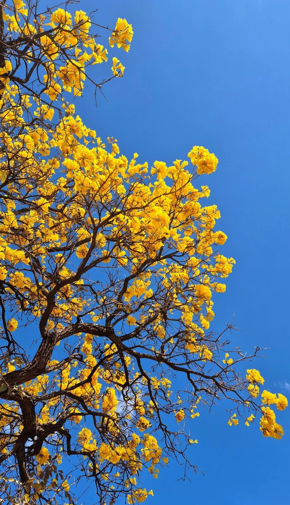
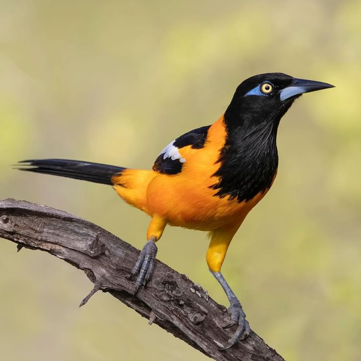
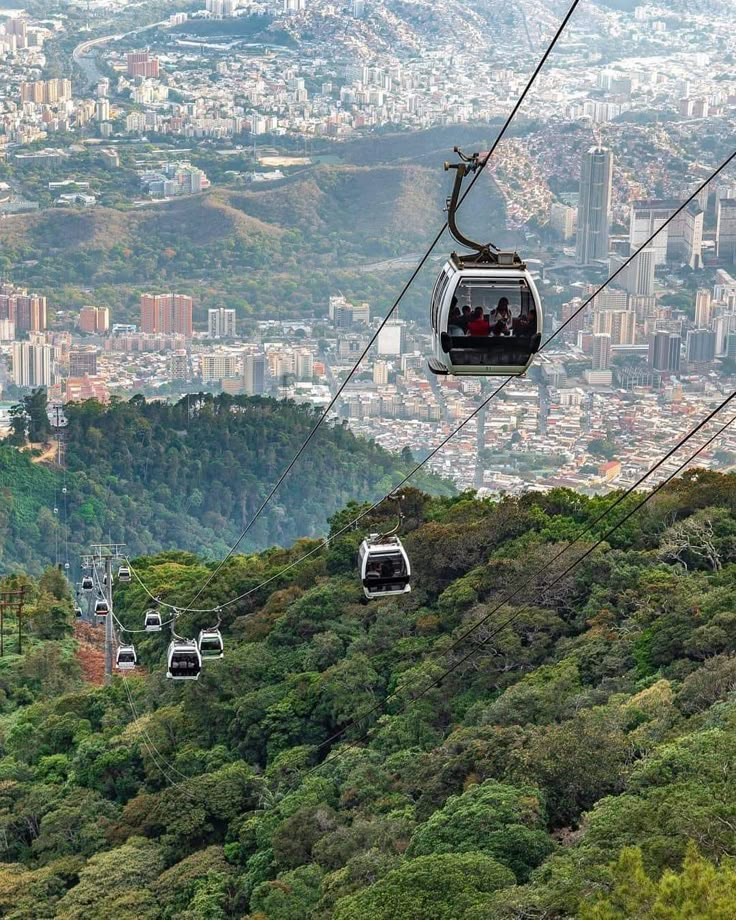
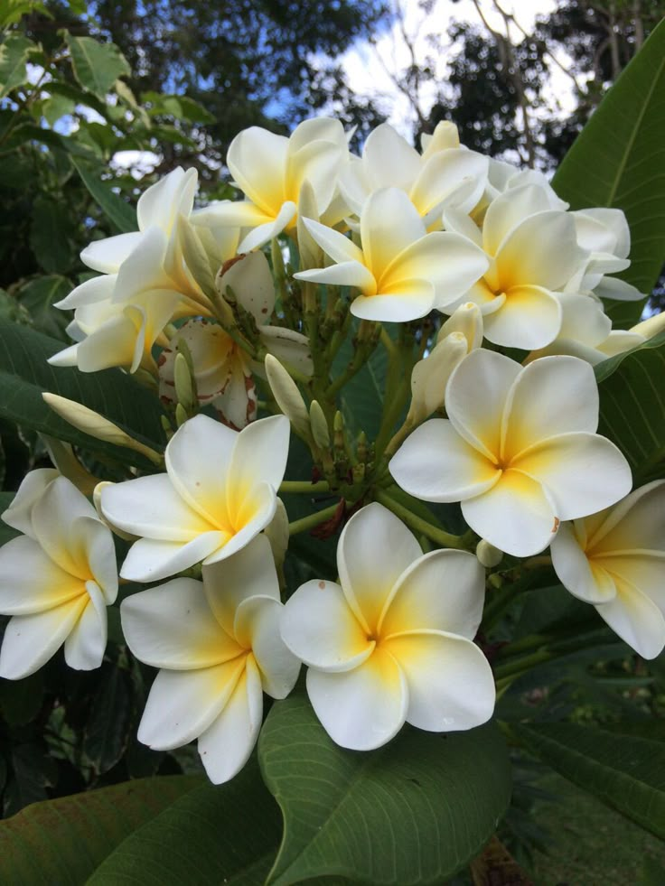

EFEMÉRIDES NATURALES
DE VENEZUELA
Mapa mental, conceptos e integración ecológica de la nación
1. Bases Conceptuales y Características
Definición, Tipos y Características fundamentales de la naturaleza
Definición
Son acontecimientos ambientales y patrios que conmemoran la biodiversidad, geografía e hitos de preservación ecológica en la historia de Venezuela.
Tipos Principales
- ✓ Símbolos Patrios: Araguaney, Turpial.
- ✓ Áreas Protegidas: Parques Nacionales.
- ✓ Conciencia Mundial: Día de la Tierra.
Características
- ✓ Sincronía estacional: Coinciden con ciclos biológicos naturales.
- ✓ Resguardo legal: Sustentadas en decretos oficiales de protección.
- ✓ Identidad endémica: Exaltan la flora, fauna y parques nacionales.
MAPA MENTAL: EVOLUCIÓN Y TIPOS
Línea del tiempo e integración conceptual de las efemérides dispuesta en un flujo continuo
EFEMÉRIDES NATURALES DE VENEZUELA
Identidad, Preservación y Biodiversidad Nacional
1. EVOLUCIÓN HISTÓRICA
Creación del Primer Parque Nacional
Nace el Parque Nacional Rancho Grande (hoy Henri Pittier), dando inicio al resguardo legal y características de conservación de la biodiversidad en Venezuela.
Decretos de Emblemas Nacionales
Proclamación del Araguaney como Árbol Nacional (1948) y el Turpial como Ave Nacional (1958) para exaltar las características de la flora y fauna patria.
Conciencia Global y Educación
Integración en la materia de GHC de fechas con características participativas como el Día de la Tierra y la Conservación de la Biodiversidad.
2. TIPOS DE EFEMÉRIDES
Símbolos Naturales
Fechas dedicadas a los íconos biológicos venezolanos cuyas características destacan por su belleza y arraigo nacional: Árbol Nacional (Araguaney), Ave Nacional (Turpial) y Flor Nacional (Orquídea).
Áreas Naturales Protegidas
Celebración de la red de Parques Nacionales y Monumentos Naturales que se distinguen por sus características de protección ambiental estricta administrados por INPARQUES.
Ecología y Planeta
Jornadas internacionales de carácter educativo y preventivo: Día del Agua, Día de la Tierra, Reciclaje y Preservación del Planeta.
TARJETAS DE EFEMÉRIDES DESTACADAS
Haz clic en cada sección para desplegar más información
Día del Árbol Nacional
Homenaje al Araguaney (Handroanthus chrysanthus), decretado en 1948 por el presidente Rómulo Gallegos.
Declaración del Turpial
Proclamación del Icterus icterus como Ave Nacional de Venezuela por su hermoso canto y colores vivaces.
Parques Nacionales
Celebración de las 44 áreas protegidas iniciadas con el Parque Nacional Henri Pittier en 1937.
ARTE Y PATRIMONIO NATURAL
Representaciones artísticas, fotográficas y culturales que exaltan la riqueza ambiental venezolana

ARAGUANEYEl Araguaney Dorado
Fotografía del árbol nacional destacando las características de su floración amarilla primaveral.

TURPIALEl Turpial Venezolano
El Turpial (Icterus icterus) y sus características cromáticas de plumaje brillante.

EL ÁVILAEl Ávila de Caracas
El majestuoso Parque Nacional El Ávila, pulmón vegetal protegido por su riqueza ecológica.

ORQUÍDEALa Flor de Mayo
La Orquídea (Cattleya mossiae) representada como emblema botánico por sus finas características estéticas.
¡GRACIAS POR PRESTAR ATENCIÓN!
Esperamos que esta presentación haya sido de su agrado. ¡Muchas gracias a todos por su tiempo y atención!